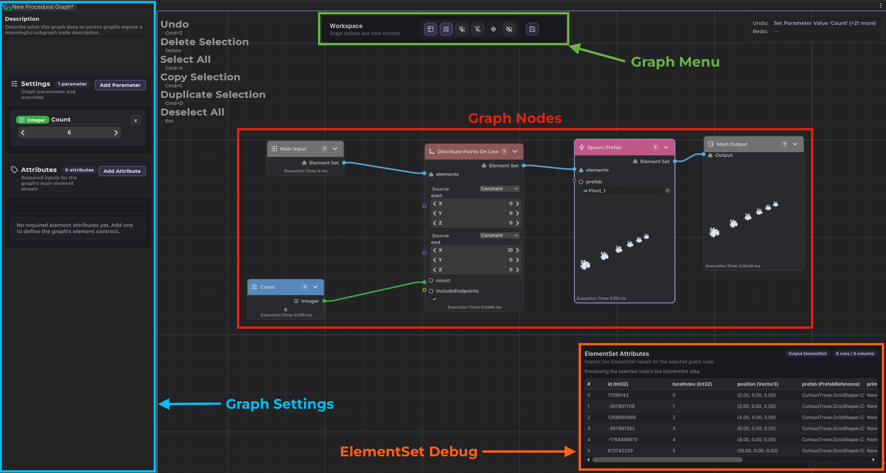

Node Graph Basics
A ProceduralGraph asset is the authored source of procedural logic in OctoShaper. It stores nodes, links, constants, parameters, required main-input attributes, and references to subgraphs. If you want the data model that actually flows through those links, see Elements?.
Graph Editor Overview

The graph boundary
- Main input and main output are always ElementSet-based?.
- Main-input requirements describe which attributes the graph expects up front.
- Main output is the dataset that downstream runtime or import workflows consume.
What a node does
Nodes are operations. They read inputs, produce outputs, and express dependencies through links. Some nodes generate new elements, some reshape data, and others convert the graph result into something Unity can instantiate or inspect.
Ports, links, and execution
- Ports define the type of data that can enter or leave a node.
- Links connect compatible output and input ports.
- The graph executor walks the graph according to those dependencies rather than a hand-authored script order.
Parameters are the user-facing controls
Parameters are the stable surface that lets designers, importer settings, or runtime systems steer a graph without rewiring it. In Unity, those values are carried through ProceduralConfiguration overrides. The runtime-facing version of that workflow is covered in Runtime Generation?.
A good rule is to expose parameters for the values you expect to tweak often, and keep the rest of the graph structure focused on reusable logic.
Executing a graph with parameter overrides
This is the main authored boundary in action: provide a graph, apply parameter overrides, execute, and then inspect the main output slot.
using System;
using CuriousTrove.OctoShaper;
using CuriousTrove.OctoShaper.Core.Data;
using UnityEngine;
public sealed class GraphDriver : MonoBehaviour
{
[SerializeField] private ProceduralGraph graph;
public object ExecuteWithSeed(Guid parameterId, int seed)
{
var context = OctoShaperRuntime.CreateExecutionContext(graph);
var executor = OctoShaperRuntime.CreateExecutor(graph);
var configuration = new ProceduralConfiguration();
configuration.SetParameterOverride(parameterId, seed);
executor.Execute(context, ElementSet.CreateImplicitSingle(), configuration);
return context.GetSlotValue(graph.MainOutputSlotId);
}
}